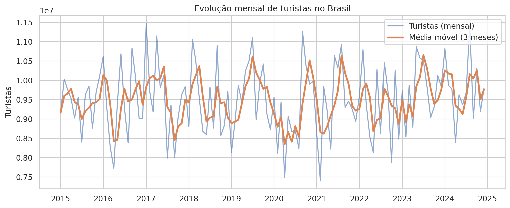
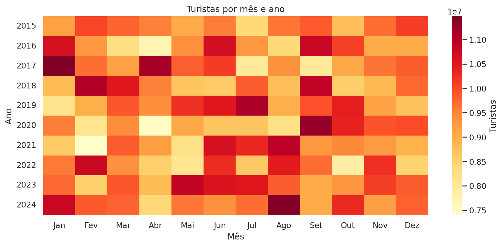
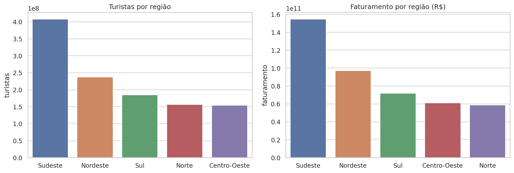
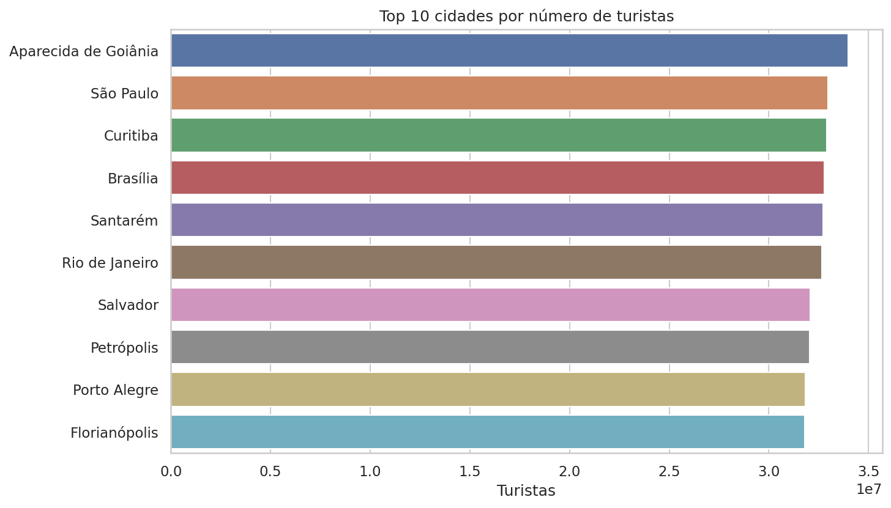
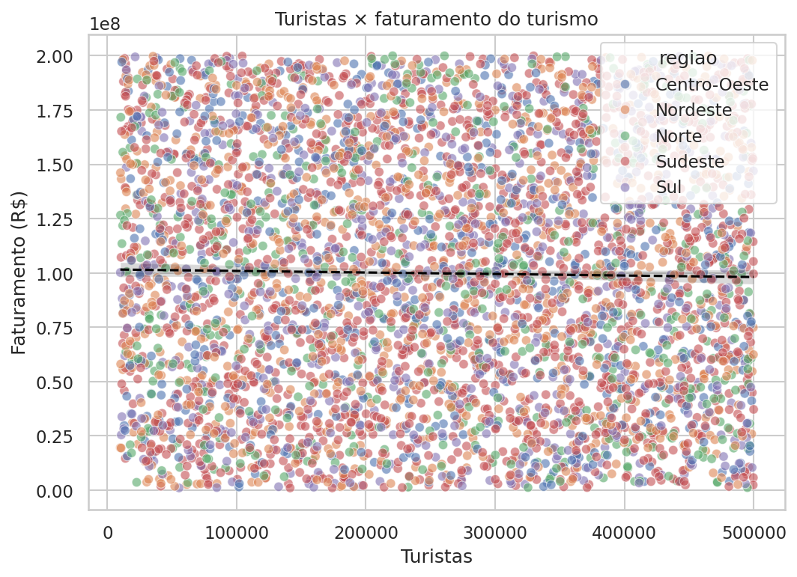
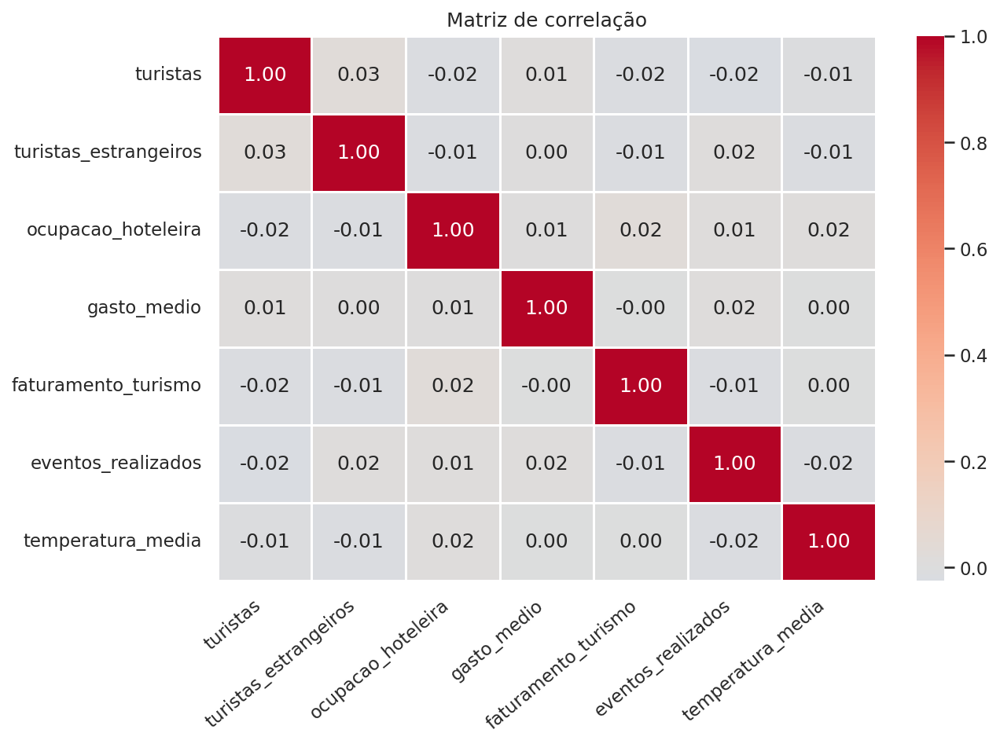

Sobre o projeto
O turismo gera empregos, movimenta serviços e pressiona a infraestrutura das cidades, mas o fluxo de visitantes muda com a época do ano, os eventos, o clima e a região.
Este projeto usa uma base simulada de turismo no Brasil entre 2015 e 2024 para investigar esses padrões: preparação dos dados, análise exploratória, indicadores, visualizações e um painel onde o usuário filtra por ano, mês, região, estado, cidade e nível de temporada.
Perguntas que o projeto responde
- Quais cidades recebem mais turistas?
- Existem períodos de alta temporada?
- Quais regiões movimentam mais recursos?
- Qual é o impacto econômico do turismo?
- Existem diferenças regionais relevantes?
- Quais destinos apresentaram maior crescimento?
- Como o turismo evoluiu ao longo do tempo?
Indicadores analisados
- Total de turistas
- –Soma de todos os turistas da base.
- Receita total do turismo
- –Impacto econômico do setor.
- Ocupação hoteleira média
- –Indicador de uso da rede hoteleira.
- Gasto médio por turista
- –Média ponderada pelo número de turistas.
- Cidade mais visitada
- –Primeira colocada no ranking de destinos.
- Região mais movimentada
- –Região com mais turistas no período.
Principais gráficos da análise






Tecnologias utilizadas
- Python
- Pandas
- NumPy
- Plotly
- Matplotlib
- Seaborn
- Streamlit
- SQLAlchemy
- SQLite
- GitHub Pages
Arquivos do projeto
- README Como executar e como o projeto está organizado
- Notebook de análise Passo a passo, da limpeza à conclusão
- Base de dados (CSV) Dataset simulado de turismo
- Código do dashboard Aplicação em Streamlit